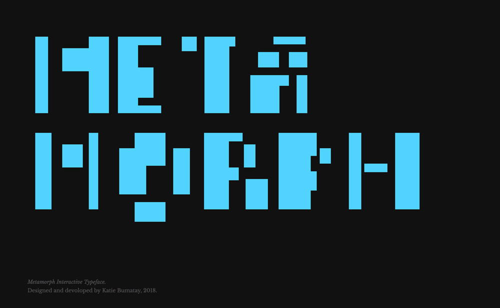

Metamorph Typeface
Micro-Interaction Design
A custom designed and coded variable typeface that serves as a the basis for experimenting with the interaction of mouse events.
Designed and developed from scratch, using HTML, CSS, and Javascript. Finished September 2018.
Published Site

The Challenge
Design and develop an interactive typeface, and create a microsite for the typeface that revolves around the interaction of mouse events.
The Product
Each letterform is constructed of multiple bars, which change to a new variable width or height when hovered over or clicked on, or when the body of the page is double clicked.
Like all my work that incorporates variability, the user can explore the page and play with the elements which are contstantly changing the experience so it's not exactly the same twice.